1碰撞检测：规划的「眼睛」
第 3 章定义了配置空间和规划问题。规划算法反复要回答一个问题：「给定关节角 $q$，机械臂会不会撞东西？」碰撞检测（Collision Detection）为规划算法提供这样的判断。
1.1 网格碰撞检测为什么计算量大
如果直接用高精度三维网格（mesh）做检测，朴素逐面对比的计算量很大：
检测两个各含 $10^5$ 个三角面片的模型是否碰撞，朴素全配对最坏要比较约 $10^{10}$ 对面片。实际库会先用包围体层次结构（BVH）等宽相位方法排除大部分候选，再检查剩余面片；也可以使用简化碰撞几何来减少计算量。
1.2 球体包裹法（Bounding Spheres）
思想：用一串球体近似每个连杆。碰撞判断退化为球心距比较：两球 $\mathbf{p}_i, \mathbf{p}_j$ 碰撞当且仅当 $\|\mathbf{p}_i - \mathbf{p}_j\| \le r_i + r_j$。
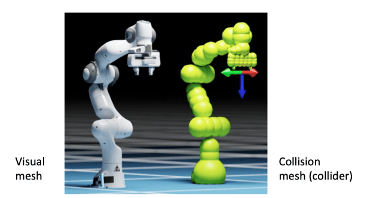
Visual mesh＝显示网格；Collision mesh (collider)＝碰撞网格（碰撞体）。左侧是外观模型，右侧用简化碰撞体表示连杆；简化程度会影响可行空间，不能把图中碰撞体理解为真实机械臂外形。
优点：高效（$O(n^2)$）。缺点：保守性导致可行解丢失——包裹球可能填满真实存在的小间隙，还可能产生虚假自碰撞（self-collision）。
1.3 凸包分解（Convex Decomposition）
思想：把凹几何体分解为多个凸包。凸体之间的碰撞检测非常高效，凹体检测则更复杂，因此先用凸体表示复杂几何（课件 p11-12）：
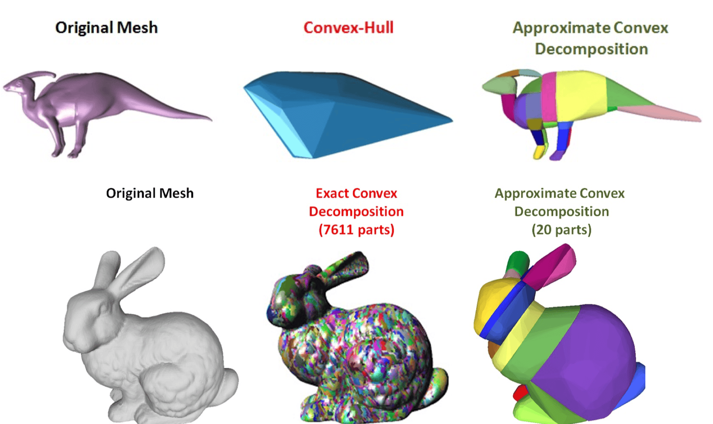
Original Mesh＝原始网格；Convex-Hull＝凸包；Exact Convex Decomposition＝精确凸分解（图中兔子为7611块）；Approximate Convex Decomposition＝近似凸分解（示例20块）。从左到右比较凹形细节与块数的取舍，数字仅对应图示模型。
| 方法 | 做法 | 评价 |
|---|---|---|
| 凸包（Convex-Hull） | 整个网格包一个凸壳 | 效率最高，精度最低 |
| 精确凸分解 | 完全精确地分解 | NP-hard，产生大量聚类，不实用 |
| 近似凸分解（ACD） | 尽量减少聚类数，每簇凹度低于阈值 | 常见工程选择，平衡精度与效率 |
ACD 比球体更精确、保守性误差更小；但凹形物体的高效分解至今仍是几何处理的研究课题。
仿真结果异常时，可以先检查碰撞模型和物理参数，再定位算法与代码。错误的碰撞体可能把可行通路封住，物理配置也会影响执行结果。
2PRM：先建地图，再查路径
有了碰撞检测，就可以用采样法（sampling-based）寻找路径：随机生成配置点，检查哪些点有效，再尝试把它们连接起来。这样能逐步探索配置空间。
概率路图法（Probabilistic Roadmap, PRM）分三步：
- 采样：在 $C_{\text{free}}$ 中随机生成 $N$ 个配置点（均匀采样 $C$-space，拒绝碰撞点——即课件 p16 的 Rejection Sampling）。注意：对 $C$-space 均匀采样自然也对 $C_{\text{free}}$ 均匀（PDF 恒为常数）；
- 建图：连接邻近点，剔除穿过 $C_{\text{obs}}$ 的边；
- 查询：在图搜索（Dijkstra / A*）中找 $Q_{\text{start}}$ 到 $Q_{\text{goal}}$ 的路径。
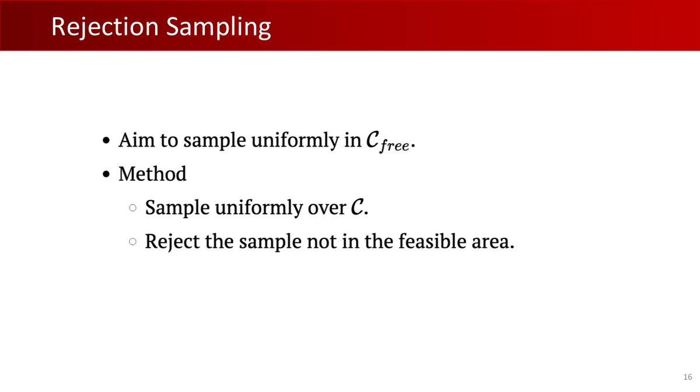
Rejection Sampling＝拒绝采样
目标是在C_free均匀采样
方法：在整个C中均匀采样，拒绝不在可行区域内的样本。
读图提示：在有界空间和明确测度下，均匀采样后仅按自由／碰撞筛选，保留样本在自由区的条件分布仍为均匀分布。
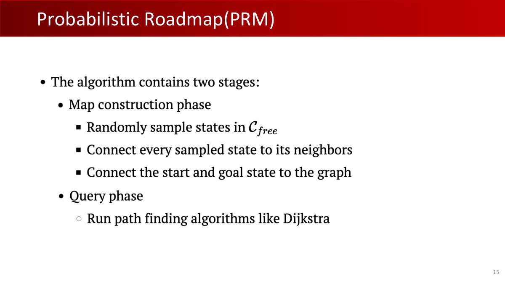
算法分为建图和查询：建图时在C_free随机采样状态，连接每个样本及其邻居，把起点和终点连接到图
查询时运行Dijkstra等路径搜索算法。
读图提示：同一静态场景中可以复用路图。找到的图路径还需检查边及执行条件。
一个实现细节：如何判断一条边全在 $C_{\text{free}}$ 中？在线段上线性采样一些点（可用二分法加速），逐个做碰撞检测。全部通过时，得到的是该离散分辨率下的有效边；采样点之间的部分需要进一步检查。
PRM 的特点：预计算的路图可复用，适合静态场景下的多查询（换起点终点不用重建图）；场景动态变化时则需重建，效率下降。
在有正间隙的可行路径、覆盖相关自由区的采样分布、可靠局部连接和碰撞判定等条件下，PRM和基础几何RRT可具有概率完备性：采样次数趋于无穷时，找到路径的概率趋近1。有限次搜索失败时，可以增加采样预算并检查场景；搜索成功后，还需另行评价路径代价。概率完备性讨论的是找到可行路径的概率，最优性则是另一项性质。离散插值检查有限状态；要严格排除两次检查之间的碰撞，可采用连续碰撞检测或有依据的步长界。角度变量跨过±π时需使用周期插值。
3窄通道攻坚战：高斯采样与桥采样
均匀采样有一个常见困难——窄通道（Narrow Passages）。下图展示了有限采样的 PRM 容易失败的场景：障碍物之间有可通行的窄缝，但落在其中的样本太少：
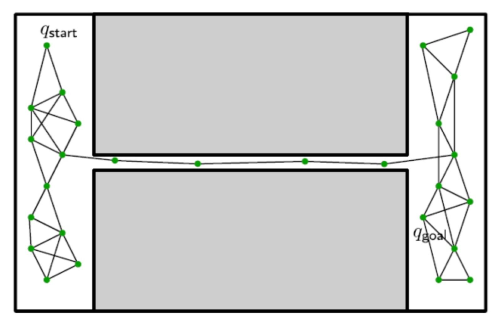
q_start＝起始配置；q_goal＝目标配置。绿色点是样本，灰色矩形是障碍；中央狭缝虽可通行，却缺少足够样本和有效连接，因此本次有限路图可能找不到路径。
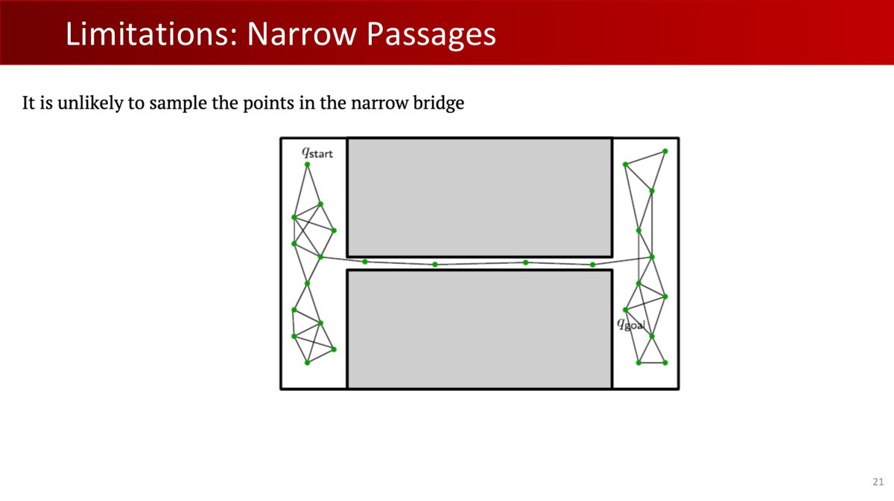
Limitations: Narrow Passages＝局限：窄通道
很难在狭窄桥接区域采到点
图中左右区域通过中央狭缝连通。
读图提示：这是有限采样下的效率问题。非零宽度通道被均匀采中的概率小，却不是永远采不到。
门缝比房间小得多，同一采样预算下落在门缝里的点可能不足——路图就可能断开。高斯采样与桥采样会增加对这些区域的关注：
3.1 高斯采样（Gaussian Sampling）
- 均匀采样 $q_1$；以 $q_1$ 为均值、$\sigma^2$ 为方差采样 $q_2 \sim \mathcal{N}(q_1, \sigma^2)$；
- 若 $q_1 \in C_{\text{free}}$ 且 $q_2 \notin C_{\text{free}}$，添加 $q_1$——即只保留「紧挨着障碍物的自由点」。
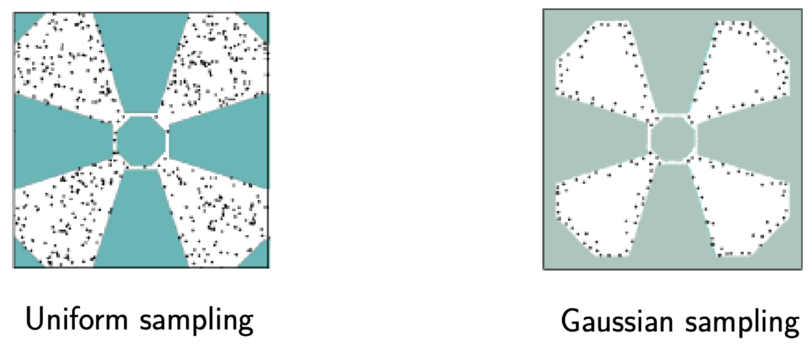
Uniform sampling＝均匀采样；Gaussian sampling＝高斯采样。右图沿障碍边界的点更密集；这是边界偏置的效果，不表示所有窄通道都会被找到。
效果：边界偏好，更容易获取地图连通信息、找到关键通路。代价：采样效率可能降低，且仍有冗余（凹陷、转角处的路标点）。
$\sigma$ 的权衡：太大难以对窄通道采样；太小则采样效率低、点离障碍太近易碰撞。
3.2 桥采样（Bridge Sampling）
高斯采样的变体，专门在窄通道里「架桥」：均匀采样 $q_1$ → 高斯采样 $q_2$ → 取中点 $q_3$；当 $q_1, q_2 \in C_{\text{obs}}$ 而 $q_3 \in C_{\text{free}}$ 时，添加 $q_3$。
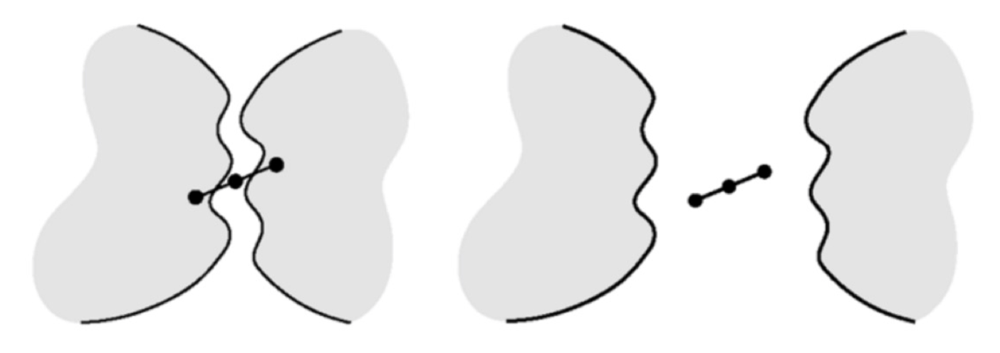
左图是较窄通道，右图是宽自由区。桥两端落在障碍内，中点落在自由区时，中点被保留；图只有几何标记，没有额外英文句子。
实际规划可以混合使用均匀、高斯和桥采样，兼顾开放区域与窄通道。选择时，查看规划库支持的采样器，再根据场景设置混合比例。
4RRT：向未知空间扩张的树
PRM 先建全局地图再查询；RRT 换一个思路——从起点长出一棵树，直接朝目标方向扩张：
- 生长树：从 $Q_{\text{start}}$ 出发，向随机采样点扩展树枝；
- 目标偏置：以概率 $\beta$ 朝 $Q_{\text{goal}}$ 扩展，以概率 $1-\beta$ 朝随机点扩展；
- 终止：树枝到达 $Q_{\text{goal}}$ 邻域。
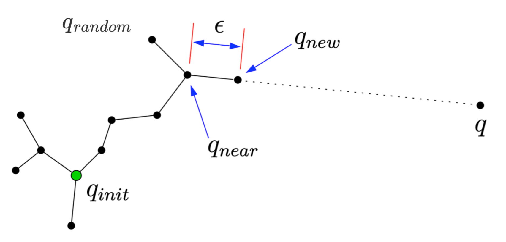
q_init＝初始配置；q_near＝树上最近节点；q_new＝新增节点；q_random／q＝随机目标；ε＝扩展步长。沿虚线方向从最近节点走有限步，再检查连边。
可以把参数 $\beta$ 理解为类似 RL 中的探索与利用（exploration vs exploitation）平衡。一味冲向目标（$\beta$ 大）可能错过更好的路径甚至根本找不到路；较少目标偏置可能使搜索更慢。可固定采样预算，比较不同参数下的成功率与耗时，再为具体场景选择参数。
RRT 的 Extend 操作：找到树上离 $q_{\text{target}}$ 最近的节点 $q_{\text{near}}$，向目标方向走一个步长 $\epsilon$ 得到 $q_{\text{new}}$，检查 $q_{\text{new}}$ 及其连线都在 $C_{\text{free}}$ 中才加入树。
步长 $\epsilon$ 的权衡：太大——扩展快但可能跳过窄通道；太小——探索精细但节点爆炸、计算负担重。
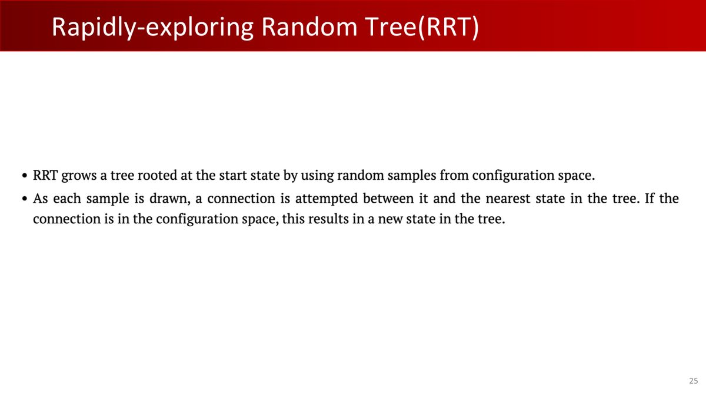
从起始状态为根，利用配置空间随机样本生长树
每抽到一个样本，尝试连接样本与树中离它最近的状态
连接有效时在树中产生新状态。
读图提示：扩展通常只向样本方向走有限步长，再检查整段边；不是每次都把随机样本完整加入树。
5RRT-Connect 与路径后处理
5.1 RRT-Connect：两棵树相向生长
RRT-Connect（Kuffner & LaValle, ICRA 2000）在 RRT 上加入以下操作：
- 双向树：从 $q_{\text{start}}$ 和 $q_{\text{goal}}$ 同时各长一棵树；
- 定向生长：先让一棵树朝随机样本扩展，再让另一棵树从其最近节点朝新节点连接；每轮可交换两棵树的角色；
- 贪婪扩展：重复按同一步长扩展，直到受阻或到达连接目标。
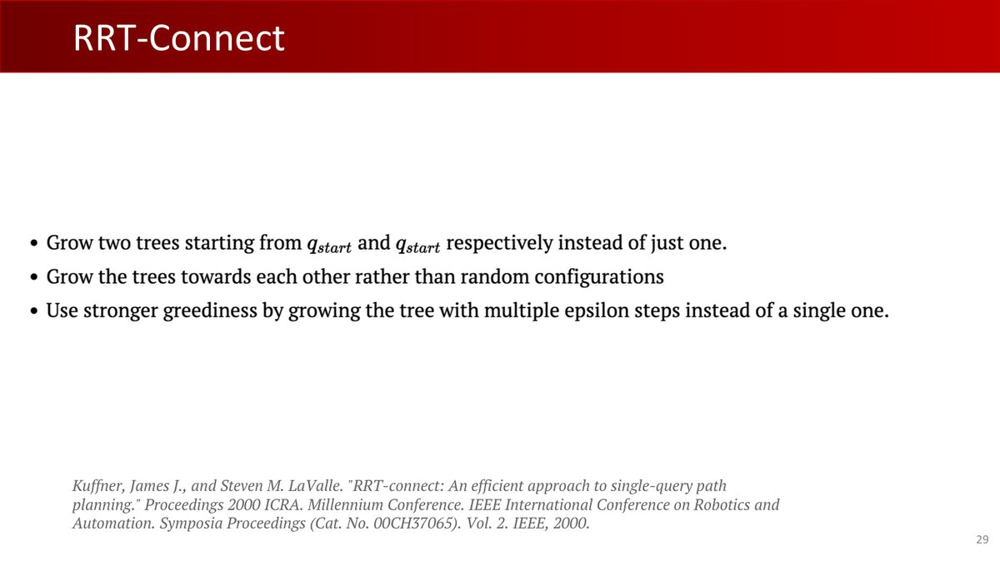
用分别以起点和目标为根的两棵树代替一棵树
让树朝彼此连接
用多个ε步连续贪婪扩展代替一次扩展
引用Kuffner与LaValle的ICRA 2000论文。
读图提示：课件两次写q_start，结合原算法应理解为q_start与q_goal。多个ε步指重复同一步长扩展，不是每次换不同步长。
5.2 Shortcutting：给路径「拉直」
基础 RRT 与 RRT-Connect 不渐近最优，即不能保证路径代价随采样增多趋于全局最优值。有限采样的 PRM 也常产生曲折路径；具有适当连边规则的 PRM*、RRT* 则有相应的渐近最优理论。捷径算法（Shortcutting）是后处理启发式：路径上不相邻的两点若直接连线在自由空间中，就跳过中间点——反复尝试消除弯路。
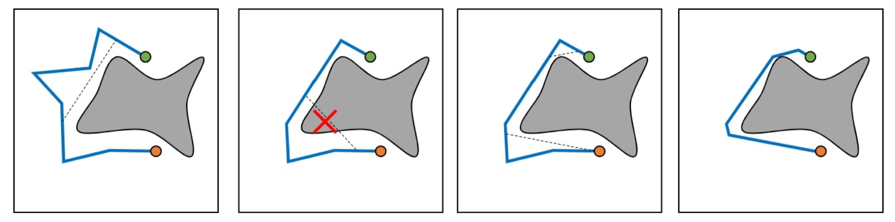
按从左到右读取：原路径曲折；第一次候选直连穿过障碍，红叉表示拒绝；另一候选无碰撞则替换片段；继续尝试缩短路径。图中没有额外英文正文。
5.3 多次重启：逃出局部最优
Shortcutting 通过替换路径片段做局部优化。图中 RRT 找到了下方路线，更短的路线却从上方绕过障碍；局部捷径化可能仍留在原来的通道内：
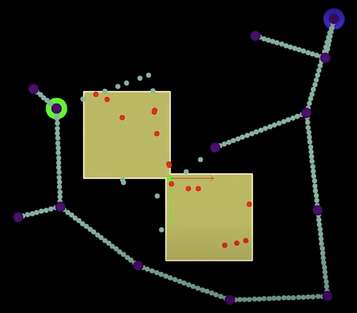
图中方块是障碍，离散点和折线表示已有路线。局部删去弯路不一定能换到另一条绕障碍的通道，因此可配合重新规划。图中没有可译英文句子。
一种改进方法是多次重启：多次运行RRT，对可行路径做捷径化，再按代价选取当前最好的一条。时间紧迫时，捷径化往往能快速改进初始路径，但也会停滞；RRT*等方法的渐近保证建立在理论假设和持续采样上。有限时间内的速度与路径质量，应通过同一任务上的实验比较。
6工业级实践：OMPL 与 MoveIt
实现基础算法后，可以学习工程系统如何调用这些规划器（课件 p35-37）：
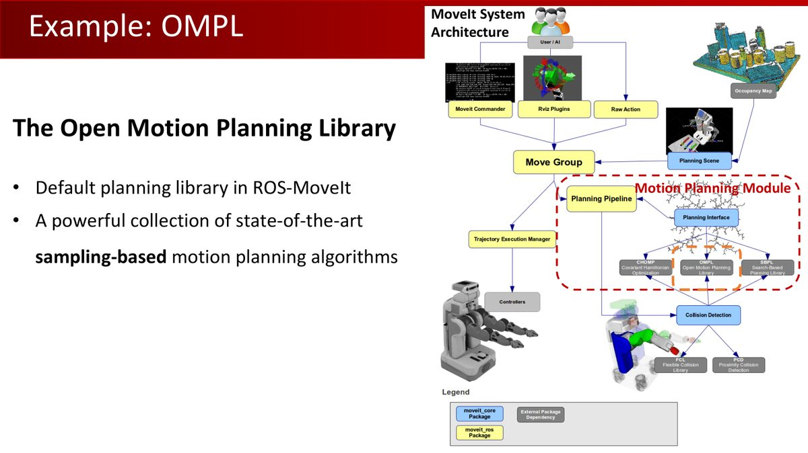
OMPL＝Open Motion Planning Library，开放运动规划库
课件介绍它是ROS-MoveIt的默认规划库，提供多种采样式运动规划算法
MoveIt System Architecture＝MoveIt系统架构
Motion Planning Module＝运动规划模块。
读图提示：从感知、场景、规划流水线到轨迹执行，各模块各有职责；OMPL主要解决规划问题，环境与机器人有效性由应用提供。
- OMPL：几何规划器（RRTConnect 为默认、RRT*、PRM、LazyPRM 等）+ 基于控制的规划器；其中几何规划器只考虑几何与运动学约束（需另检验路径到动力学可行轨迹的转换），控制规划器则按系统模型传播状态；
- 课件附了 RRTConnect 的三段官方演示视频链接（YouTube），可搜索「OMPL RRTConnect demo」观看。
采样规划可用于生成可行路径，轨迹优化可用于改善平滑性或代价，学习策略可提供目标或初值。比较 GPU 并行与 CPU 实现的速度时，固定硬件、场景与工作量，并记录这些条件。路径生成后，继续检查轨迹及执行反馈。
7控制系统：让关节「说到做到」
规划给出轨迹，但机器人凭什么精确走完？——控制系统。先看组成（课件 p39）：传感器（关节角、速度、力矩）→ 控制器 → 执行器（关节电机），构成回路。
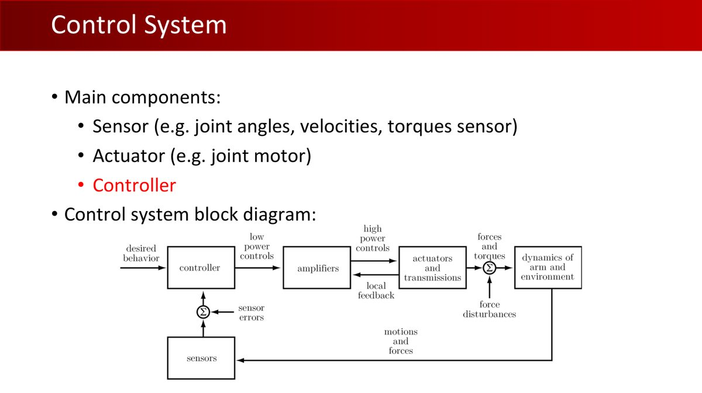
主要组件：Sensor＝传感器，例如关节角、速度、力矩传感器
Actuator＝执行器，例如关节电机
Controller＝控制器
框图含desired behavior（期望行为）、amplifiers（放大器）、actuators and transmission（执行器与传动）、dynamics of arm and environment（机械臂与环境动力学）、sensors（传感器）。
读图提示：沿箭头读取：指令驱动系统，状态测量反馈给控制器；外部扰动和传感误差会影响响应。
执行器、负载和外部扰动会使实际运动偏离目标。反馈控制利用测得的状态持续修正误差，让实际运动接近规划轨迹。
开环 vs 闭环
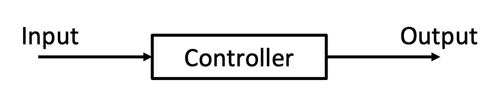
Input＝输入；Controller＝控制器；Output＝输出。图中没有输出回到输入的箭头，表示无状态反馈的开环控制链。
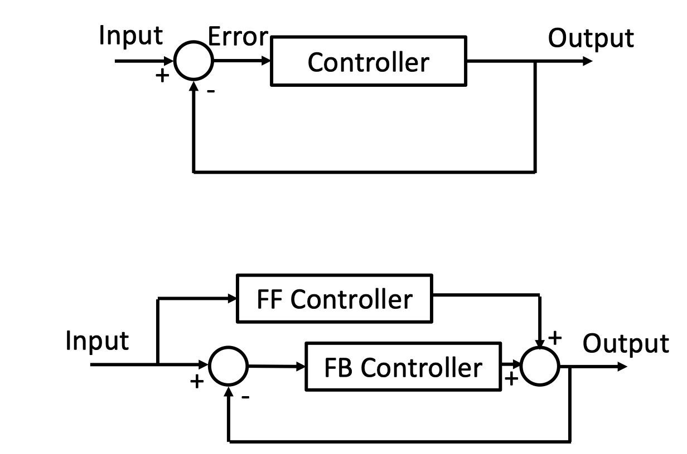
Input＝输入；Error＝误差；Controller＝控制器；Output＝输出；FF Controller＝前馈控制器；FB Controller＝反馈控制器。上图用输出反馈修正误差，下图把基于目标的前馈与基于误差的反馈相加。
| 开环（Feedforward, FF） | 闭环（Feedback, FB） | |
|---|---|---|
| 机制 | 按预设动作或模型生成输入，不利用当前输出误差修正 | 实时反馈，构建反馈回路 |
| 弱点 | 受噪声和干扰影响大，依赖精确建模 | 需要传感器与状态估计 |
| 能力 | — | 设计合适时可抵抗干扰并稳定系统 |
性能三大指标
定义误差 $\theta_e = \theta_d - \theta$（期望 − 当前），一个「好」的控制系统要：
- 稳态误差（Steady-State Error）最小：$e_{ss} = \lim_{t\to\infty}\theta_e(t)$，理想为 0；
- 调节时间（Settling Time）最短：误差首次进入并保持在 ±2% 误差带所需时间；
- 超调量（Overshoot）最小：$\text{overshoot} = |a/b| \times 100\%$（$a$ 最大偏移、$b$ 稳态值；需要非零归一化基准）。
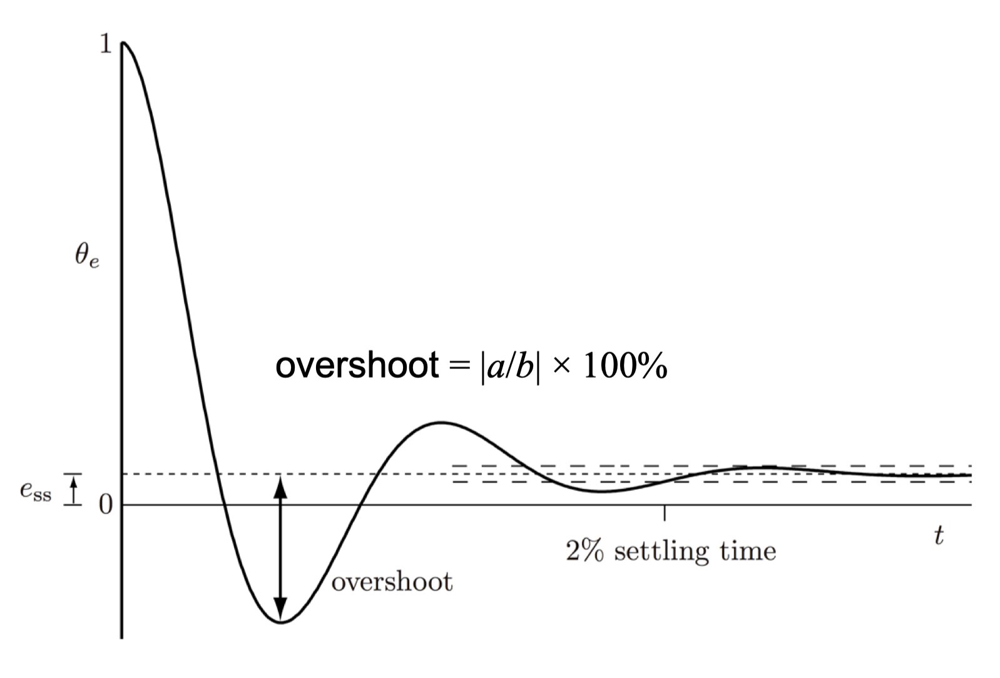
overshoot＝超调；2% settling time＝2%误差带的调节时间；θ_e＝误差，e_ss＝稳态误差，t＝时间。看曲线何时进入误差带并保持；超调百分比需要明确分母基准。
8P 控制：误差的动态方程
最简单的问题：如何把误差信号变成电机指令？P 控制（比例控制）：控制信号与误差大小成正比：
$$ P = K_p\,\theta_e(t) $$
假设控制信号改变状态的导数（速度信号）：$\dot{\theta}(t) = K_p\theta_e(t)$。结合 $\dot{\theta}_e = \dot{\theta}_d - \dot{\theta}$，且目标以恒定速度移动 $\dot{\theta}_d = c$，得到一阶微分方程：
$$ \dot{\theta}_e(t) + K_p\theta_e(t) = c $$
解这个 ODE（齐次通解 + 特解）：
$$ \theta_e(t) = \frac{c}{K_p} + \left(\theta_e(0) - \frac{c}{K_p}\right)e^{-K_p t} $$
从这个解可以读出两种情况：
- $c=0$（目标静止）：$\theta_e(t) = \theta_e(0)e^{-K_pt}$——在本理想连续模型且 $K_p>0$ 时，误差指数衰减到 0；
- $c \neq 0$（目标移动）：稳态误差 $\lim_{t\to\infty}\theta_e = c/K_p \neq 0$——保持一定跟踪滞后。误差与目标速度成正比、与增益成反比。增大 $K_p$ 能减小但不消除。
若控制信号改变的是二阶导数（力/力矩信号）：$\ddot{\theta}(t) = K_p\theta_e(t)$——在正增益、固定目标的理想无阻尼模型中，系统会持续振荡而不渐近收敛（相当于弹簧无阻尼）。分析其他力控系统时，先写出其惯量、阻尼与控制输入关系，再判断响应。
9PI 控制：消灭稳态误差
在上一节的理想速度输入模型中，P 控制对恒速目标保留跟踪滞后；可增加一个累积误差的项。这就是积分项：
$$ PI = K_p\theta_e(t) + K_i\int_0^t \theta_e(\tau)\,\mathrm{d}\tau $$
误差持续得越久、量越大，积分输出越大——把「一直差一点」累积成可观的修正量。
对速度信号控制的系统（目标加速度为零时），误差动态方程是二阶常系数齐次 ODE：
$$ \ddot{\theta}_e + K_p\dot{\theta}_e + K_i\theta_e = 0 $$
其特征方程 $r^2 + K_pr + K_i = 0$ 的根决定阻尼形态。先假定 $K_p>0,K_i>0$，使两根实部为负；判别式 $K_p^2-4K_i$ 大于、等于、小于零分别对应过阻尼、临界阻尼、欠阻尼。也可写自然频率 $\omega_n=\sqrt{K_i}$、阻尼比 $\zeta=K_p/(2\sqrt{K_i})$。
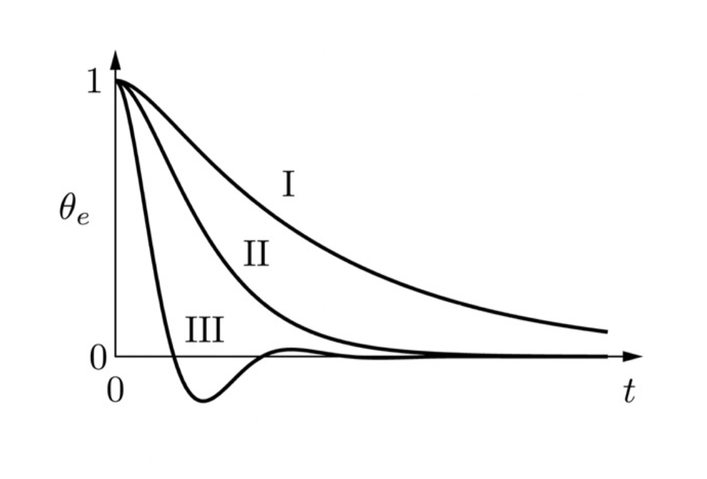
I＝过阻尼；II＝临界阻尼；III＝欠阻尼；纵轴θ_e是误差，横轴t是时间。是否振荡由特征根决定，快慢比较还需固定自然频率和初始条件。
| 特征根 | 形态 | 表现 |
|---|---|---|
| 两个相异实根 | 过阻尼（Overdamped） | 缓慢收敛，无振荡 |
| 二重实根 | 临界阻尼（Critically damped） | 相同自然频率下的典型临界阻尼响应；具体最快性还取决于初值 |
| 共轭复根 | 欠阻尼（Underdamped） | 振荡收敛（有超调） |
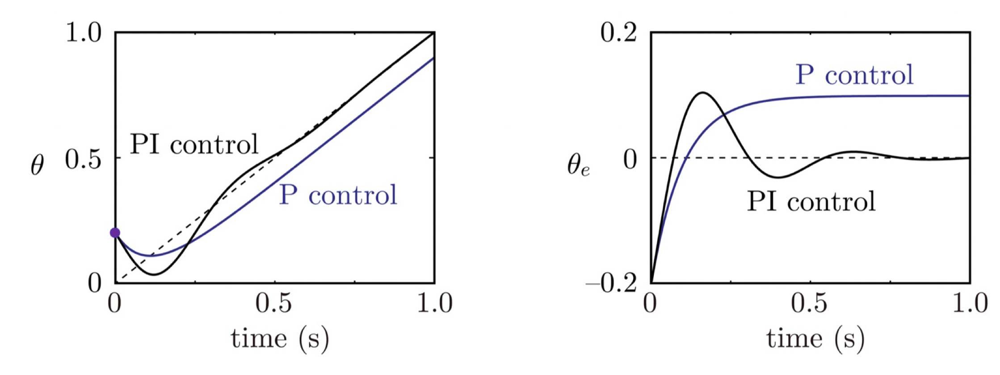
P control＝比例控制；PI control＝比例积分控制；time (s)＝时间（秒）。左图对比状态与恒速目标，右图对比误差；本例P误差趋于c/K_p，PI在稳定条件下趋于0。
在理想速度输入模型、连续时间且闭环稳定的条件下，P 可消除固定目标的误差，PI 可消除恒速目标的稳态误差；任意加速轨迹通常仍有跟踪误差。实际负载、延迟、饱和和积分状态都会改变结论。Setpoint 是“固定设定值”，能否只用P仍需按对象及精度要求判断。
10PD 与 PID：完整的控制律
最后一项是微分项——用误差变化率反映趋势：
$$ D = K_d\frac{\mathrm{d}}{\mathrm{d}t}\theta_e(t) $$
与误差变化率成正比：误差在增大时加强控制，误差在减小时温和收力——预测趋势、抑制超调和振荡。当控制输入直接作用于二阶状态导数、惯量已归一化且没有其他动力学项时，PD 误差方程与前节速度输入PI的方程形式相似（$K_d$ 占阻尼位）：
$$ \ddot{\theta}_e + K_d\dot{\theta}_e + K_p\theta_e = \ddot{\theta}_d $$
三者合一就是工业界最广泛使用的PID 控制律：
$$ PID = K_p\theta_e(t) + K_i\int_0^t\theta_e(\tau)\,\mathrm{d}\tau + K_d\frac{\mathrm{d}}{\mathrm{d}t}\theta_e(t) $$
| 项 | 管什么 | 一句话 |
|---|---|---|
| P 比例项 | 当前状态 | 误差大就大力修正，响应快但留稳态误差 |
| I 积分项 | 历史累积 | 消灭稳态误差 |
| D 微分项 | 未来趋势 | 抑制超调与振荡 |
Tuning PID＝PID调参
表比较单独增大参数的影响：K_p通常缩短上升时间、增加超调、减小稳态误差
K_i可消除稳态误差但可能增加超调及调节时间
K_d通常减小超调及调节时间，理论上不改稳态误差
Rise time＝上升时间，Stability＝稳定性。
读图提示：这是常见经验趋势，依赖对象、工作点、滤波与采样，不能替代稳定性分析。Increase/Decrease分别是增大／减小，Small/Minor change是小变化。
调参经验表（展示常见趋势；使用时结合被控对象、延迟、滤波和采样时间，并检查闭环稳定性）：
| 参数 | 上升时间 | 超调量 | 调节时间 | 稳态误差 | 稳定性 |
|---|---|---|---|---|---|
| $K_p$ ↑ | 减小 | 增大 | 小变化 | 减小 | 变差 |
| $K_i$ ↑ | 减小 | 增大 | 增加 | 消除 | 变差 |
| $K_d$ ↑ | 小变化 | 减小 | 减小 | 理论上无影响 | $K_d$ 小则改善 |
对理想二阶力矩模型 $\ddot\theta=u$ 和固定目标，PID令误差满足 $\dddot e+K_d\ddot e+K_p\dot e+K_i e=0$。当三增益均为正时，渐近稳定还要求 $K_dK_p>K_i$。调节积分增益时，要与比例、微分增益一起满足这个稳定条件。真实关节还需考虑惯量、阻尼、负载与执行器饱和；微分常加低通滤波，积分可加抗饱和处理。
机器人关节里的 PD 控制（课件 p57）
课件示例把每个关节自由度（DoF）作为一个PD驱动接口；实际机械臂可能还包含动力学补偿和其他控制环节，参数叫 stiffness（刚度）与 damping（阻尼）——本质上就是 $K_p$ 和 $K_d$：
$$ \text{force} = \text{stiffness} \times (\text{targetPosition} - \text{Position}) + \text{damping} \times (\text{targetVelocity} - \text{Velocity}) $$
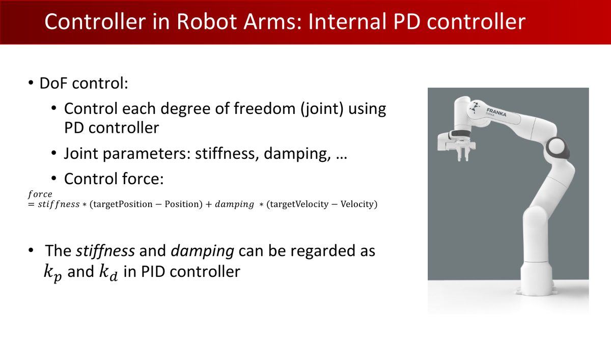
每个DoF（自由度、关节）可采用PD控制
关节参数有stiffness（刚度）和damping（阻尼）
force=stiffness×(targetPosition−Position)+damping×(targetVelocity−Velocity)
刚度、阻尼可视作K_p、K_d。
读图提示：旋转关节的force应理解为力矩，平移关节为力；真实机械臂还可能包含耦合动力学、重力补偿和其他控制环节。
课件演示了它在两大仿真器中的实践：SAPIEN（sapien.ucsd.edu，课程组自己的仿真器，抓取方向的核心工具）与 Isaac Gym（NVIDIA 并行物理仿真，强化学习标配）。
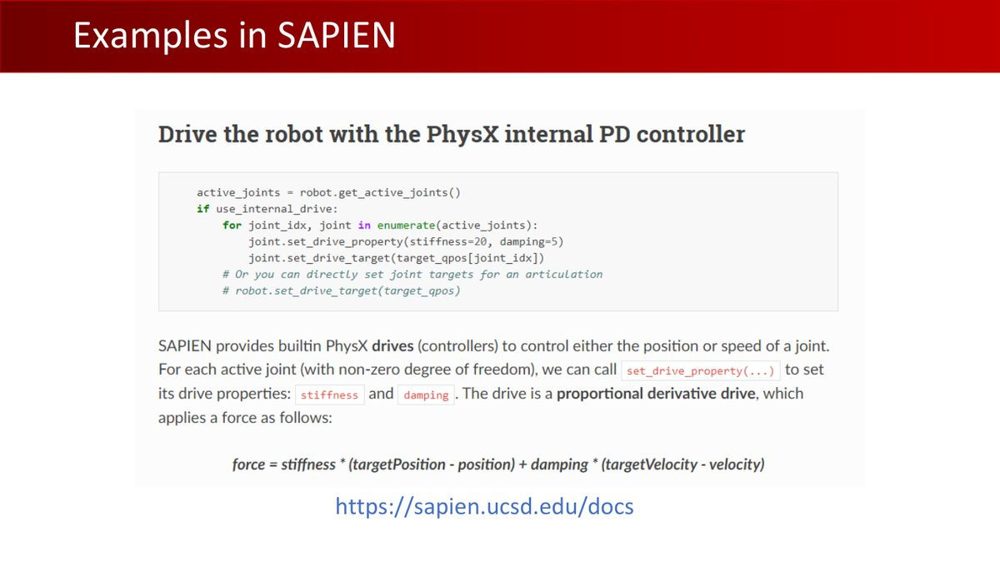
Examples in SAPIEN＝SAPIEN中的示例
Drive the robot with the PhysX internal PD controller＝使用PhysX内部PD控制器驱动机器人
对活动关节设置drive properties（驱动参数）的stiffness和damping，再设置drive target（目标位置）
图下给出控制力公式。
读图提示：接口名按原示例保留，须对照对应版本文档。上方代码表达“设置增益，再设置关节目标”的操作次序。
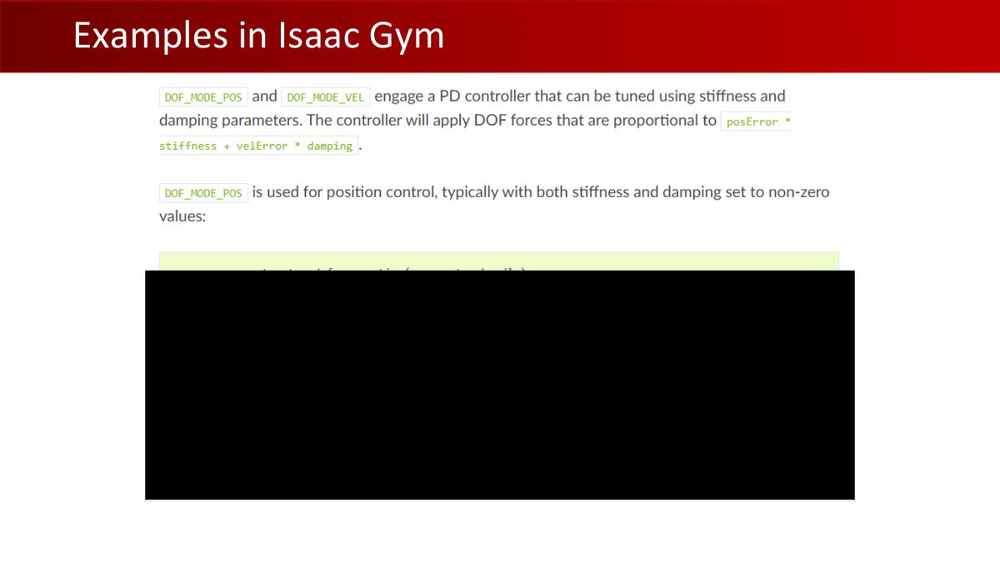
Examples in Isaac Gym＝Isaac Gym中的示例
DOF_MODE_POS与DOF_MODE_VEL使用由刚度、阻尼调节的PD控制器
控制力与位置误差posError×stiffness及速度误差velError×damping成正比
位置模式通常把刚度和阻尼都设为非零。
读图提示：黑色区域是演示媒体占位／视频区域，PDF静态页不包含完整动作。模式与参数含义需按对应接口核对。
PD/PID 是关节控制的常见基础工具。使用具体接口时，先查看对应仿真器与作业的依赖：公开作业 2 使用 MuJoCo，作业 3 使用 MuJoCo Playground/JAX；课件中的 SAPIEN、Isaac Gym 示例可用于理解控制思路。
11本章小结
本章把运动规划与控制接到前两章的运动学上。课件 p60 将机器人学概括为四部分：
机器人学四大件：① 运动学（Kinematics）——笛卡尔空间与关节空间互转；② 动力学（Dynamics）——本课程跳过；③ 运动规划（Motion Planning）——得到几何可行的路径；④ 控制（Control）——确保运动精确跟随规划的轨迹。
| 核心概念 | 一句话解释 |
|---|---|
| 碰撞检测 | 球体包裹（快而保守）/ 凸包分解（ACD 平衡精度效率） |
| PRM | 采样-建图-查询，静态场景多查询首选 |
| 高斯/桥采样 | 边界偏好 / 窄通道架桥，攻克均匀采样的盲区 |
| RRT / RRT-Connect | 树扩张 + 探索-利用平衡；双向生长 + 贪婪连接 |
| Shortcutting + 重启 | 局部平滑 + 并行多次尝试，逃出次优主干 |
| PID | P按当前误差修正、I累积误差、D反馈变化率；效果需结合对象与稳定性 |
从第 5 章开始，机器人长出「眼睛」——3D 视觉与抓取（课件 p61 预告）。第 5 章讲抓取的第一性原理与旋转回归（含作业 2 位姿估计），其中会用到第 2-4 章的旋转与坐标变换。
12动手实践
本章没有原版课程作业，但两个练习用纯 numpy 就能把算法跑起来——建议都用 matplotlib 可视化，亲眼看到树怎么长、误差怎么收敛。
练习 1：2D RRT 路径规划（40 分钟）
在 $[0,100]^2$ 的平面上放几个圆形障碍物，实现基础 RRT（含目标偏置与 Shortcutting），画出树和最终路径：
import numpy as np
import matplotlib.pyplot as plt
obstacles = [((30, 40), 8), ((60, 65), 10), ((75, 25), 7)] # (圆心, 半径)
def in_collision(p):
return any(np.linalg.norm(p - np.array(c)) <= r for c, r in obstacles)
def edge_free(a, b):
d = b - a
length2 = np.dot(d, d)
for center, radius in obstacles:
u = 0.0 if length2 == 0 else np.clip(np.dot(np.array(center)-a, d) / length2, 0, 1)
if np.linalg.norm(a + u*d - np.array(center)) <= radius:
return False
return True
q_start, q_goal = np.array([5., 5.]), np.array([95., 95.])
V = [q_start]; parent = [-1]; eps = 4; beta = 0.1
np.random.seed(42)
for i in range(2000):
q_target = q_goal if np.random.rand() < beta else np.random.rand(2)*100
idx = min(range(len(V)), key=lambda j: np.linalg.norm(V[j]-q_target))
d = q_target - V[idx]; distance = np.linalg.norm(d)
if distance < 1e-12: continue
q_new = V[idx] + min(eps, distance) * d / distance
if np.any(q_new < 0) or np.any(q_new > 100): continue
if not in_collision(q_new) and edge_free(V[idx], q_new):
V.append(q_new); parent.append(idx)
if np.linalg.norm(q_new - q_goal) < eps and edge_free(q_new, q_goal):
V.append(q_goal.copy()); parent.append(len(V)-2)
print("已验证并连接目标！"); break
# 回溯路径并可视化（略：画障碍圆、树边、最终路径）挑战 1：加 Shortcutting——随机挑路径上两点，直连无碰撞就删中间点。挑战 2：把 $\beta$ 调到 0.8 和 0.02，观察树的形态差异（探索 vs 利用）。
练习 2：P 与 PI 跟踪仿真（30 分钟）
仿真一个一阶系统（如关节速度指令控制位置），对比 P 与 PI 在恒速目标下的表现：
import numpy as np
dt, T = 0.01, 10.0
ts = np.arange(0, T, dt)
theta = 0.0; theta_d = 0.0
Kp, Ki = 8.0, 12.0
errs_p, errs_pi = [], []
theta_p = theta_pi = 0.0
integral = 0.0
for t in ts:
theta_d = 1.0 * t # 目标以恒速 1 移动
# P 控制：theta_dot = Kp * err
theta_p += Kp * (theta_d - theta_p) * dt
errs_p.append(1.0 * (t + dt) - theta_p)
# PI 控制：theta_dot = Kp*err + Ki*∫err
e = theta_d - theta_pi
integral += e * dt
theta_pi += (Kp * e + Ki * integral) * dt
errs_pi.append(1.0 * (t + dt) - theta_pi)
print("P 稳态误差:", np.round(errs_p[-1], 4))
print("PI 稳态误差:", np.round(errs_pi[-1], 4)) # 应趋近 0挑战：画出两条误差曲线；把 $K_p$ 翻倍看稳态误差是否减半（验证 $c/K_p$）；增大 $K_i$ 观察欠阻尼与数值积分误差；若出现发散，同时检查时间步长，区分离散数值积分误差与连续模型的稳定性。
两个练习共约 70 分钟，全部只需 numpy + matplotlib。完成后，结合路径图解释窄通道中的采样困难，再用误差曲线验证 $c/K_p$ 的预测。若想深入，OMPL 的 Python 绑定与 MoveIt 2 教程是下一步。
附A术语表
| 术语 | 解释 |
|---|---|
| 碰撞检测 | 判断给定关节角 $q$ 是否与环境碰撞（在 $C_{\text{free}}$ 还是 $C_{\text{obs}}$） |
| 球体包裹法 | 用球体序列近似连杆，球心距比较做碰撞检测，快但保守 |
| 近似凸分解（ACD） | 把凹网格切成凹度受限的凸聚类，并尽量减少块数，精度效率平衡 |
| 拒绝采样（Rejection Sampling） | 均匀采样配置空间，丢弃碰撞点，保留 $C_{\text{free}}$ 点 |
| PRM | 概率路图：采样-建图-查询三步，静态场景多查询 |
| 高斯采样 | 保留「自由点紧邻障碍点」的样本，产生边界偏好 |
| 桥采样 | 保留「两端碰撞、中点自由」的中点，专攻窄通道 |
| RRT | 快速扩展随机树：从起点长树，目标偏置参数 $\beta$ 平衡探索利用 |
| RRT-Connect | 双向树 + 定向生长 + 贪婪扩展（Kuffner & LaValle 2000） |
| Shortcutting | 路径后处理：直连不相邻点消除弯路（局部优化） |
| 开环 / 闭环控制 | 无反馈直接执行 / 传感器反馈修正误差 |
| 稳态误差 $e_{ss}$ | 系统到达稳态后的残余误差，理想为 0 |
| 调节时间 / 超调量 | 误差进入 ±2% 带的时间 / 响应超过稳态值的程度 |
| PID | 比例（当下）+ 积分（历史，消稳态误差）+ 微分（趋势，抑超调） |
| 刚度 / 阻尼（stiffness / damping） | 机器人关节 PD 控制中 $K_p$ / $K_d$ 的工程叫法 |
| OMPL | 开放运动规划库，ROS-MoveIt 的默认规划库 |
附B课件 61 页完整索引
原版 Lecture 4 课件共 61 页（GitHub 原文件）。下表逐页列出内容及在本教程中的位置：
| 页码 | 页面内容 | 在教程中的位置 |
|---|---|---|
| p1 | 封面：Lecture 4 - Robotics III | 封面区 |
| p2 | Logistics 页 | §12（作业背景） |
| p3 | 作业 1 发布通知（旋转工具库 + 玩具 FK） | §12（呼应第 1/2 章） |
| p4 | 主题页：运动规划 | §1 开头 |
| p5 | 议程：问题定义、PRM、RRT | §1-5（导航） |
| p6 | 配置空间（回顾） | §1（回顾第 3 章） |
| p7 | 运动规划示意 | §1 |
| p8 | 运动规划示意 | §1 |
| p9 | 配置空间例子 | §1 |
| p10 | 碰撞建模：URDF 网格 + FK + 碰撞检查 | §1.1 |
| p11 | 替代方案：凸分解（凹网格 → 凸物体集合） | §1.3 |
| p12 | 凸包 / 精确凸分解（NP-hard）/ 近似凸分解 ACD | §1.3 |
| p13 | 主题页：采样算法 | §2 开头 |
| p14 | 主题页：PRM | §2 |
| p15 | PRM 示意 | §2 |
| p16 | 拒绝采样 | §2（步骤 1） |
| p17 | PRM 流程 | §2 |
| p18 | 挑战 | §2-3 |
| p19 | 例子 | §2 |
| p20 | 例子 | §2 |
| p21 | 局限：窄通道 | §3 |
| p22 | 高斯采样 | §3.1 |
| p23 | 桥采样 | §3.2 |
| p24 | 主题页：RRT | §4 开头 |
| p25 | RRT 示意 | §4 |
| p26 | Extend 操作 | §4 |
| p27 | RRT 流程 | §4 |
| p28 | 挑战（参数调节） | §4（步长权衡） |
| p29 | RRT-Connect（Kuffner & LaValle, ICRA 2000） | §5.1 |
| p30 | RRT-Connect 伪代码 | §5.1 |
| p31 | Shortcutting：非渐近最优、抖动路径、后处理 | §5.2 |
| p32 | Shortcutting 示意 | §5.2 |
| p33 | Shortcutting 的局限与多次重启 | §5.3 |
| p34 | Shortcutting 示意 | §5.3 |
| p35 | OMPL：MoveIt 默认规划库 | §6 |
| p36 | OMPL 规划器清单（RRTConnect 默认、RRT*、LazyPRM 等） | §6 |
| p37 | OMPL 演示视频链接（YouTube） | §6 |
| p38 | 主题页：控制系统 | §7 开头 |
| p39 | 控制系统组成：传感器、执行器、控制器 | §7 |
| p40 | 控制器框图（完整版 / 简化版） | §7 |
| p41 | 开环（FF）vs 闭环（FB）控制 | §7 |
| p42 | 控制系统的有效性：稳态快、调节快、稳定 | §7 |
| p43 | 误差响应：稳态误差、超调量、调节时间 | §7 |
| p44 | 主题页：PID 控制器 | §8 开头 |
| p45 | 控制器：误差信号 → 电机指令 | §8 |
| p46 | P 控制定义 | §8 |
| p47 | P 控制一阶形式：ODE 求解与稳态误差 | §8 |
| p48 | P 控制二阶形式：振荡不稳定 | §8（红框） |
| p49 | 积分信号 | §9 |
| p50 | PI 控制 | §9 |
| p51 | PI 的二阶 ODE 与三种阻尼 | §9 |
| p52 | P 与 PI 对比（setpoint 场景） | §9 |
| p53 | 微分信号 | §10 |
| p54 | PD 控制 | §10 |
| p55 | PID 控制完整式（位置/速度控制常用） | §10 |
| p56 | PID 调参 | §10（调参表） |
| p57 | 机器人关节 PD：stiffness / damping | §10 |
| p58 | SAPIEN 中的关节控制示例 | §10（画廊） |
| p59 | Isaac Gym 中的关节控制示例 | §10（画廊） |
| p60 | 机器人学总结：运动学/动力学/规划/控制 | §11 |
| p61 | 结尾页：下集预告 3D Vision | 页脚（下一章预告） |
附C参考资源
- 课程官网：pku-epic.github.io/Intro2EAI_2025
- 本教程素材来源仓库：zhuozhiyongde/Embodied-Artificial-Intelligence-2025Spring-PKU
- 本章课件：
Slides/Lecture04_03_10.pdf（61 页） - 本章笔记原文：
Notes/04-Robotics-III.md
最优性理论参见Karaman与Frazzoli：采样式最优运动规划；规划器区别参见OMPL官方规划器文档。
延伸阅读
- Kuffner & LaValle, RRT-Connect, ICRA 2000：双向 RRT 原始论文
- OMPL 官网（ompl.kavrakilab.org）与 MoveIt 2 教程（ROS 2 官方文档）
- SAPIEN 仿真器文档（sapien.ucsd.edu）：关节控制接口
- Isaac Lab 文档：并行物理仿真与 RL 训练框架（Isaac Gym 的继任者）
- 课件附 OMPL 演示视频：YouTube 搜索「OMPL RRTConnect demo」
自测：能解释这些现象吗？
- RRT已经把节点长到目标附近，为何仍要检查最后一段边？
- PRM采样2000次失败，能否断言任务无解？
- 为什么速度输入系统的P与力矩输入系统的P响应不同？
- 为什么PI消除误差的结论需要先检查闭环稳定？
参考思路
目标连接边可能碰撞；有限随机失败不构成无解证明；一阶和二阶被控对象不同；不稳定系统不一定存在稳态误差极限。请回到各节的假设再推导。